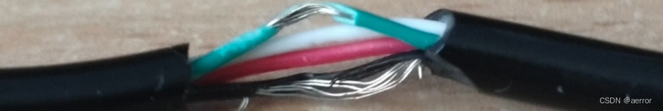

适用于变砖的设备
由于我们有很多基于 Qualcomm 的设备，其中一些设备可能会古怪地猜测如何进入 EDL 模式，或者如何正确进入。 例如，对于 Alcatel，您必须先按住两个音量键，然后再按住其中一个，对于 CAT B35，您必须按住 * 和 #，对于 8110，您必须按住 Up 和 Down，在此期间您必须插入电缆。
有时你会觉得自己没有空余的手。 :)
还有一些主板上有test point的，这个取决了每个手机，不知道在什么地方，也不一定有。
因此，一个非常简单的电缆模块（一个穷人的夹具）就派上用场了，它根本不需要焊接。
1. 拿一根备用的 microUSB 数据线，剥去中间某处的绝缘层。
2. 检测 D+ 和 GND 线（通常是绿色和黑色）并剥去它们的绝缘层。

完毕！ 就这么简单。 :)
如何使用它：
1. 关闭手机并将数据线的 microUSB 端连接到手机。
2. 将剥开的 D+ 和 GND 线压在一起。
3.将USB端连接到PC，按住剥开的线约5秒钟。
4. 断开彼此的电线。 PC 应检测到 9008 (edl) 模式。
原理图：